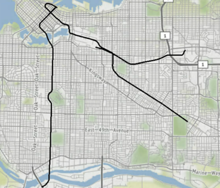

Learning Objectives
After completing this unit, you'll be able to:
- Create a line feature by connecting points.
- Create multiple lines when an attribute value changes.
Video
Resources
Introduction
Another common use of coordinates is to build lines from a series of points. In this unit, you'll learn how to use the LineBuilder transformer to create a line from points.
Exercise
- Open FME Workbench 2022.0 or later.
- Repeat the steps from Exercise: Turn Coordinates into Geometry using Reader Parameters or Exercise: Turn Coordinates into Geometry Using the VertexCreator Transformer to create points from the new rapid_transit_line.csv file. Its coordinate system is also UTM83-10.
- Add a LineBuilder transformer to the canvas, connecting it to either the CSV reader or the VertexCreator, depending on the method you chose to get the points.
- In the LineBuilder parameters, enable Group Processing and set the Group By parameter to LINE. This tells the LineBuilder to stop connecting the points when the LINE attribute changes. This will result in three different lines in this example. If your lines are not coming out as expected, you may be required to sort by a particular attribute to organize the data by using the Sorter. In FME 2018 or older, the Group By option is not available. Use the Connection Break Attribute instead.

- Run the workspace and inspect the output.
Results
The output of lines using any of the three methods and a LineBuilder transformer. Stylized in FME Data Inspector using map tiles by Stamen Design, under CC-BY-3.0. Data by OpenStreetMap, under CC-BY-SA.